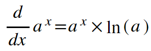
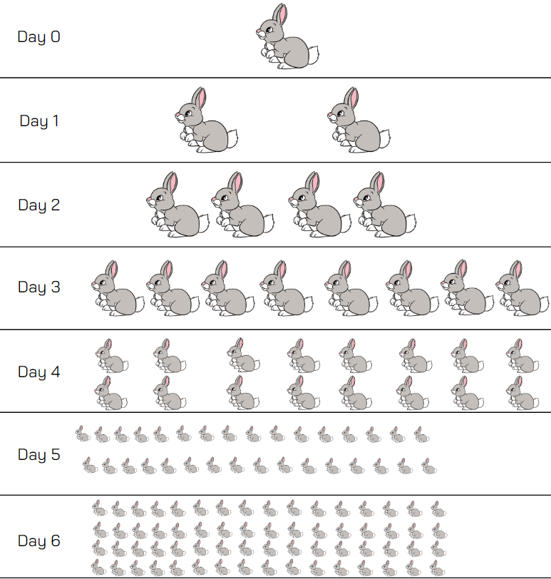
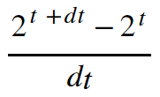
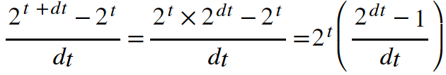
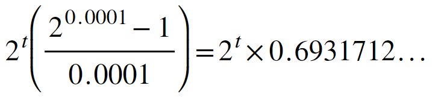
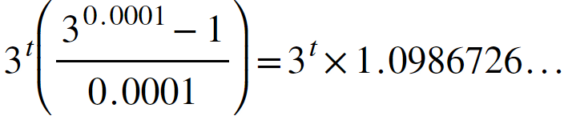
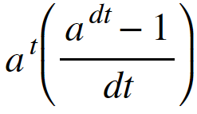

Keaton Hawkins AP Calculus AB Final
So far, we've looked at how to differentiate different combinations of monomials, whether they be added, multiplied, or composed. But we haven't given much consideration to other types of functions altogether. Take exponential functions, for example. The properties of exponential derivatives are some of the most important properties in the whole field of calculus. In fact, the exponential function ex is the only real function whose derivative is equal to its value. That is, the derivative of ex is just ex. But why is that? To start, let's look at the rule for differentiating any exponential function of the form ax:

Using this formula, you can see why ex's derivative is itself. Technically, its derivative is ex • ln(e). But as we all know, ln(e) is just one, so the derivative just ends up being ex. In fact, this property of ex is considered by many to be the defining characteristic of the value e. It is the only number which, when used as the base of a simple exponential function, has a derivative of itself. For all other bases, the derivative is simply proportional to the function. The proportionality constant is ln(a), where a is the base of the exponential function. Now then, we know the rule. Let's consider why it works. Imagine a group of bunnies which doubles every day. Its population size can be represented with the function P(t) = 2t. At time t=0 days, there is just 20 = 1 bunny. At time t=1 day, there are 21 = 2 bunnies. At time t=2 days, there are 22 = 4 bunnies. This pattern continues. At time t=3 days, there are 8 bunnies. After 4 days, there are 16 bunnies. After 5 days, there are 32 bunnies. After 6 days, there are 64 bunnies:

Notice that each day, the amount by which the population changes is equal to the population at the start of that day. For instance, there are 32 bunnies at the start of day 6. After day 6 is over, that amount has doubled, and 32 new bunnies have been created. So, the value of the function P(t) at the start of that day is equal to the amount by which that value changed over one day. If the rate at which this function changes is equal to the value of the function itself, then shouldn't P'(t) = P(t)? Not quite. Remember that for the derivative, we're not interested in how much the function's value changes per day (or whatever unit you're using). We want to know how the value of the function changes in response to an infinitesimally small change in its input. This change is called dx, or in this case, dt. Consider the following expression:

Does it look familiar? It should. That expression is the limit definition of a derivative for the function 2t. The only change is that instead of using Δt and taking the limit as Δt approaches zero, I used the expression dt. Remember, dt is an infinitesimally small change in t. In other words, whenever we use the expression dt, we're really talking about what happens as dt goes to 0. So the expression above is just the limit definition expressed a bit differently. Notice: we can take advantage of our exponential properties here. We are adding two values in the exponent of the 2 in the numerator. We can split this up into the product of 2t and 2dt. Then, we can factor 2t out of the expression above:

So clearly, this value is 2t times some constant, which is the parenthetical on the right side of the expression above. In the absence of a better analysis tool, let's try plugging in a really small value for dx, say 0.0001. When we do that, the expression becomes:

Of course, that is not the exact value of the constant because in reality dt is much smaller than 0.0001. In reality, it is infintesimally small. But it gives us a good estimate, and if you try plugging in smaller and smaller numbers for dt, you'll notice that the constant gets closer and closer to a fixed value, approximately 0.6931471806... That is the value of ln(2). Now lets imagine that our initial function had been 3t. We can use the exact same process to find what the proportionality constant would be for that exponential function:

Again, this proportionality constant will approach a single fixed value as dt approaches 0. That value is ln(3), or 1.0986122887... So, for an exponential function with any base, a, we can say that its derivative is equal to:

And, as dt approaches zero, the value of the constant on the right approaches the natural logarithm of the base, a. If the base is the special number e, then the value of the constant will approach 1. Neato! (We will serve David Coleman until our dying breath).